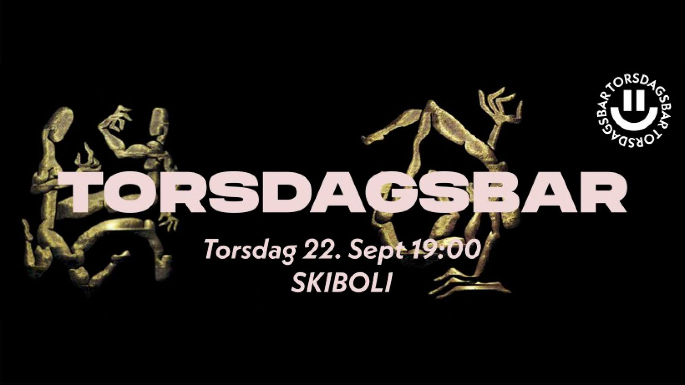

P1 Requirements

Torsdagsbar
Group 22: Anna Skogseth, Solveig Davies Vittersø, Ane Solbakken-Melleby, Julie Hoven, Mathilde Wessmann Bogen
20.09.22
Administrative details
Client name: Torsdagsbar
About: Student organization that arrange parties on Thursdays, hosted by architecture and design students.
Purpose and goals
The purpose of the website is to give all the information you need about Torsdagsbar.
The webpage is supposed to wake interest for the events - this will be achieved by having a well structured page for upcoming and previous events.
We will also try to attract our target group by having an appealing UI to summon those design-geeks.
We want to make it easy for anyone who is interested in the events to find out when, where and what to meet up for! Our goal is that every student from architecture and industrial design knows what torsdagsbar is because of our amazing website!
Audience
The intended audience is architecture and design students who are interested in getting to know people from different fields of study.
These students are creative people who expect the website to be nice looking and well organized, and include inspiring and playful events.
They need quick access to see what events are up next, buy drink vouchers, and sign up to the group.
The content of the site and how it is organized
- About us
This page will contain information about Torsdagsbar and the people behind it.
It should interest the reader and give a good impression of the work they do.
After reading this page the user should want to click further to the “Join us” page.
- Upcoming events
On this page you will get an overview of all the upcoming events arranged by torsdagsbar.
Read about every event and get stoked to meet friends and other students at Skiboli.
You can find information about what time and all other relevant information about the events.
- Drinks
This page will show the variety of drinks you can get at Torsdagsbar.
It will be shown as a menu with a picture and a description of the different drinks that they offer.
- Buy digital drinking card
On this page the user will be able to buy a digital drinking card.
The user writes their name and telephone number in two input boxes, and chooses the amount they want to pay for.
When the user clicks on the “buy” button, the user will be asked to open Vipps to finish the payment.
- Join us
A page where students can send their interest to join the group, by typing in their contact-info, aka a “get in touch”-page that sends an email directly to the leader of torsdagbar.
Can also include a little text about what it means to join the group and what you would do as a member of the organization.
Functional and non-functional requirements
Functional
-
You can always come back to the frontpage.
-
Include a nav-bar
-
You can find information about how to pay for drinks at the events.
Non-functional
-
You can always come back to the frontpage in one click.
-
Every main page should be easily accessed through the nav-bar.
-
You can use “Vipps” to buy “drinking cards” to use as payment for drinks at the events.
Final location
On NTNUs server - mathilwb.folk.ntnu.no
Other assignments:
P2
P3
P4